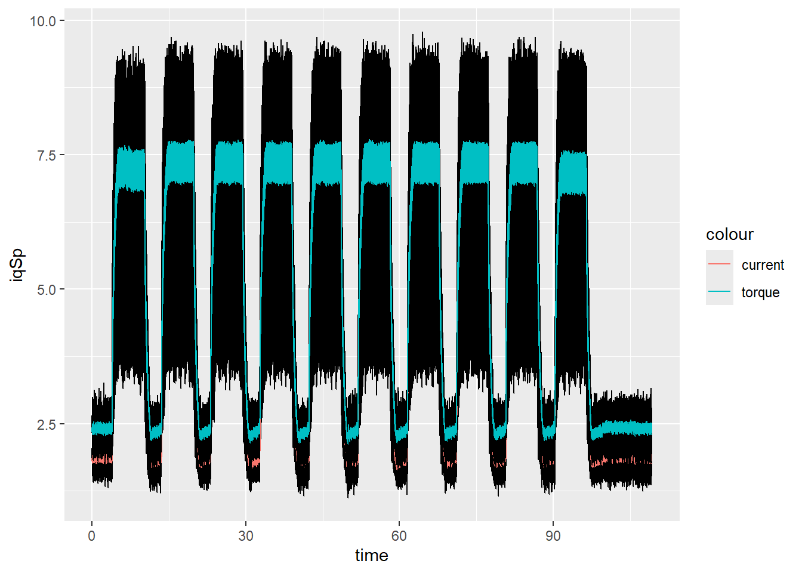
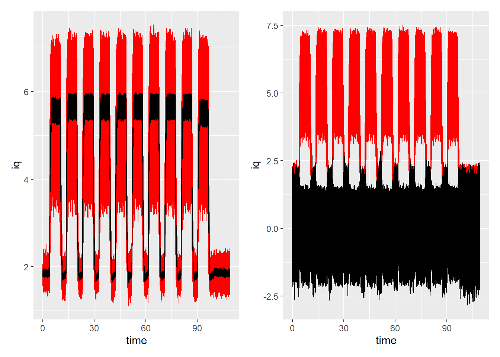
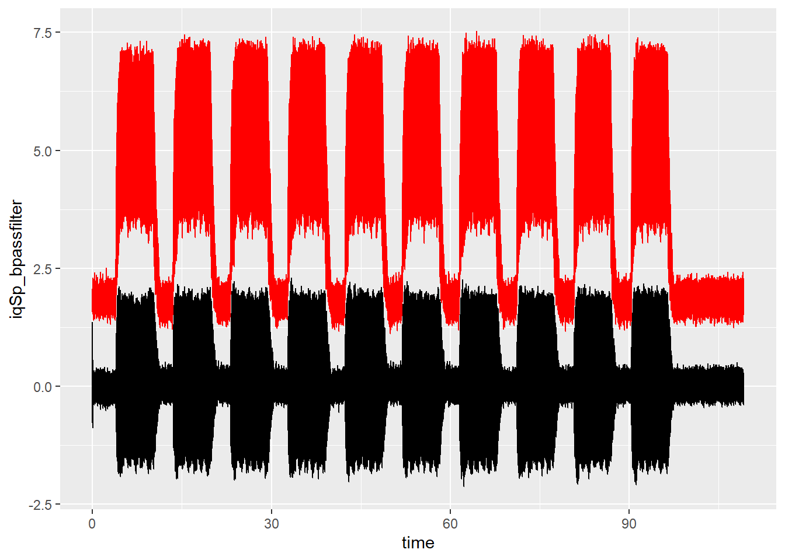

#setwd("D:/github/DataMining2024")GibbsSampler_CuttingTool
Necessary Library
knitr::opts_chunk$set(echo = TRUE)
library(gt)
library(ggplot2)Warning: package 'ggplot2' was built under R version 4.3.3library(MASS)
library(patchwork)
Attaching package: 'patchwork'The following object is masked from 'package:MASS':
arealibrary(R2OpenBUGS)
library(rjags)Loading required package: codaLinked to JAGS 4.3.1Loaded modules: basemod,bugslibrary(R2jags)Warning: package 'R2jags' was built under R version 4.3.3Registered S3 methods overwritten by 'R2WinBUGS':
method from
print.bugs R2OpenBUGS
plot.bugs R2OpenBUGS
as.mcmc.list.bugs R2OpenBUGS
Attaching package: 'R2jags'The following object is masked from 'package:coda':
traceplotlibrary(patchwork)
library(tidyverse)Warning: package 'tidyverse' was built under R version 4.3.3Warning: package 'readr' was built under R version 4.3.3── Attaching core tidyverse packages ──────────────────────── tidyverse 2.0.0 ──
✔ dplyr 1.1.3 ✔ readr 2.1.5
✔ forcats 1.0.0 ✔ stringr 1.5.1
✔ lubridate 1.9.3 ✔ tibble 3.2.1
✔ purrr 1.0.2 ✔ tidyr 1.3.1── Conflicts ────────────────────────────────────────── tidyverse_conflicts() ──
✖ dplyr::filter() masks stats::filter()
✖ dplyr::lag() masks stats::lag()
✖ dplyr::select() masks MASS::select()
ℹ Use the conflicted package (<http://conflicted.r-lib.org/>) to force all conflicts to become errors# filters
library(signal)Warning: package 'signal' was built under R version 4.3.3
Attaching package: 'signal'
The following object is masked from 'package:dplyr':
filter
The following objects are masked from 'package:stats':
filter, polylibrary(rstan)Warning: package 'rstan' was built under R version 4.3.3Loading required package: StanHeadersWarning: package 'StanHeaders' was built under R version 4.3.3
rstan version 2.32.6 (Stan version 2.32.2)
For execution on a local, multicore CPU with excess RAM we recommend calling
options(mc.cores = parallel::detectCores()).
To avoid recompilation of unchanged Stan programs, we recommend calling
rstan_options(auto_write = TRUE)
For within-chain threading using `reduce_sum()` or `map_rect()` Stan functions,
change `threads_per_chain` option:
rstan_options(threads_per_chain = 1)
Do not specify '-march=native' in 'LOCAL_CPPFLAGS' or a Makevars file
Attaching package: 'rstan'
The following object is masked from 'package:tidyr':
extract
The following object is masked from 'package:R2jags':
traceplot
The following object is masked from 'package:coda':
traceplot
The following object is masked from 'package:R2OpenBUGS':
monitorlibrary(parallel)Some functions
To analise and preprocess, there are dedined different auxialary fucntions:
lim22pi(phi): converts the angular signal obtained from the CNC into a angular signal limited between \(0\) and \(2\pi\). The input signal \(\phi\) has the unit degree. The output is a list with the rearranged signal \(\phi\) and the index, where the signal restarts in \(0\).
maf(in_signal, n): calcualtes the moving average value for la last \(n\) values of the signal in_signal and the moving standard scalar. The output in data frame with the moving averge signal, moving average standard deviation and moving standard scalar signal.
max_Mc(id_reduce, Mc, phi): calculates the maximal value within a interval of \(0\) and \(2\pi\). It requires the output from lim22pi(phi) and the signal of the cutting torque. The output is a data frame with the maximal torque in the interval of \(2\pi\) and its angular position.
beta_dist_param(m, var): calculates the \(\alpha\) and \(\beta\) of a beta distribution based on a mean value and its standard deviation.
get_amps_at_freq(iq, freq_lim, print=FALSE): gets the maximal ampliudes of a signal iq between the frequences freq_lim[1,2] and freq_lim[3,4]. If print in TRUE, the fft is plotted. Outputs are: amplitude and magnitude of the FFT, the values of the maximal amplituds in the defined frequency interval and the corresponding frequencies and the complete frequency range.
source('cut_analysis_fcn.R')Definition of Butterworth Filter
A Butterworth filter is a type of signal processing filter designed to have a frequency response that is as flat as possible in the passband, meaning it doesn’t distort the signal within its pass frequency range. It is also called a “maximally flat magnitude” filter because of its smooth response, [1].
The gain is constant and flat in the passband, with no ripple. The response decreases monotonically past the cutoff frequency, meaning the signal’s power attenuates smoothly without oscillation. It does not have a flat phase response, but its behavior is well-structured. The filter’s sharpness (rate of attenuation after the cutoff) depends on the filter order. A higher order results in a steeper roll-off.
Variants:
Low-pass Butterworth filter: Passes frequencies below a specific cutoff frequency and attenuates frequencies above it.
High-pass Butterworth filter: Passes frequencies above a specific cutoff and attenuates those below.
Band-pass Butterworth filter: Passes a specific range of frequencies, attenuating those outside the band. Band-stop Butterworth filter: Attenuates frequencies within a specific range and passes others.
In this project, the band pass filter was applied as it cuts off static complnents of the signal and parts of the signal beyond the requiered frequencies: rotational speed in Hz and its multiple of number of cutting edges: \(f_{rot}\) and \(zf_{rot}\) .
Read data
As previously describe, the results of the PCA shows, that the spindle torque has the main influence to detect wear characteristics. Therefore, the main focus in on evaluating this signal and the correspinding angular position. The evaluation is conducted on different cutting levels starting with the level 002, then two levels during the cut and at the end of the tool life (level 117 and 118). The spindle current is is combined for all recordings in one level together with the time vector.
# Specify the folder path
folder_path <- "..\\data\\080807_WearMillingY_50%\\Level_002\\"
# Get a list of all .csv files in the folder
csv_files <- list.files(path = folder_path, pattern = "\\.csv$", full.names = TRUE)
# Print the list of .csv files
#print(csv_files)
iqAx4_L002 <- NULL
time_L002 <- NULL
toffset <- 0
nfiles <- length(csv_files)
for(fidx in 1:nfiles){
## spindle current
process_mill <- read.csv(csv_files[fidx])
iqSp <- process_mill$X..Nck..SD.nckServoDataActCurr32..u1..4.
iqAx4_L002 <- append(iqAx4_L002, iqSp)
# time
time <- process_mill$time
time_L002 <- append(time_L002, time+toffset)
toffset <- time_L002[length(time_L002)]
}Then the spindle torque is calculated by multiplying with the motor constant \(k_m\) and the data are stored in a data frame.
iqSp <- iqAx4_L002
time <- time_L002
nsamples <- length(iqSp)
dtime <- diff(time)
dtime <- append(dtime, 0.002)
N <- length(iqSp)
raund_count = 0
km <- 1.3
Mc <- iqSp * km
Mc_real4STAN <- iqSp * km
df_plot_data_complete <- data.frame(iqSp = iqSp,
#velSp = velSp,
time = time,
dtime = dtime,
#phi = phi_real,
Mc = Mc)
ggplot(df_plot_data_complete) +
geom_line(aes(x = time, y = iqSp)) +
geom_line(aes(x = time, y = maf(iqSp, 12)$maf_signal, colour="current"))+
geom_line(aes(x = time, y = Mc)) +
geom_line(aes(x = time, y = maf(Mc, 12)$maf_signal, colour="torque"))
Signal processing
To process the model and identify the process parameters, it is necessary to prepocess the data. In this case, two strategies were applied: the Moving Standard Scalar and a Band Pass Filter.
Moving Standard Scalar
The moving standard scalar is based on the standard scalar function, but evaluated over an specific number of values.:
\[ scsc = \frac{x_i - \hat{x_n}{\sigma_n} \ i=k,..k+n\ n: the number of values considering for the interval \]
The left hand side of the plot shows the moving average value of the signal together with the original signals and the right hand side the moving standard scalar signal together with the original signal.
df_sdtsca_iqSp_filt = maf(iqSp, 12)
iqSp_maf = df_sdtsca_iqSp_filt$maf_signal
iqSp_mStdScOut = df_sdtsca_iqSp_filt$mStdScOut
df <- data.frame(t = time, iq = iqSp, iq_filt = iqSp_maf, iqSp_var = iqSp_mStdScOut)
g1 <- ggplot(df) +
geom_line(aes(x=time, y=iq), color="red") +
geom_line(aes(x=time, y=iq_filt))
g2 <- ggplot(df) +
geom_line(aes(x=time, y=iq), color="red") +
geom_line(aes(x=time, y=iqSp_var))
g1+g2Warning: Removed 1 row containing missing values or values outside the scale range
(`geom_line()`).
Band pass filter
As mention previously, the band pass filter cuts off the frequency components outside the defined frequency range. In this case, it is necessary to cut off the static part of the signal and the component above of relevant frequency. Therefore the lower frequency was set to 10 Hz and the higher frequency to 150Hz. The cutting process is conducted at approximately 35 Hz and the tool has 3 cutting edges. Therefore, the relevant frequencies are 35 Hz and 105Hz.
The figure show the original signal and the band pass filtered signal.
# Band-pass filter with lower and upper cutoff frequencies
Ts <- time[2]-time[1]
fs <- 1/Ts
flow <- 10 # Hz
fhigh <- 150 # Hz
fband <-c(flow, fhigh) / (fs/2)
filter_order <- 4
bandpass_filter <- butter(filter_order, fband, type = "pass")
iqSp_bpassfilter <- filter(bandpass_filter, iqSp)
df_bpass <- data.frame(time, iqSp_bpassfilter, iqSp)
g1 <- ggplot(df_bpass, aes(time, iqSp_bpassfilter)) +
geom_line() +
geom_line(aes(time, iqSp), color="red")
g1Don't know how to automatically pick scale for object of type <ts>. Defaulting
to continuous.
Priori of \(m_c\) and \(k_{c11}\)
The value of \(m_c\) must be in a range of [0,1]. Therefore a beta distribution is defined for this parameters. For the value of \(k_{c11}\) a normal distribution is considered. The left hand side graphic shows the prior distribution for \(m_c\), the right hand side graphic the prior distribution for \(k_{c11}\).
mc <- 0.23
kc11 <- (2306-977*0)
beta_dist_mc <- beta_dist_param(mc, 0.02^2)
beta_dist_mc alpha beta
1 101.6025 340.1475beta_dist_kc <- beta_dist_param(kc11, 977^2)
beta_dist_kc alpha beta
1 -15147.05 15140.48# test the result
N <- 10000
x = seq(0, 1, length.out=N)
xnorm = seq(100, 5000, length.out=N)
m_kc <- 2306
sd_kc <- 977
beta_init_mc <- dbeta(x, beta_dist_mc$alpha, beta_dist_mc$beta)
norm_init_kc <- dnorm(xnorm, m_kc, sd_kc)
df_prior_dist <- data.frame(x = x,
xnorm = xnorm,
beta_init_mc = beta_init_mc,
norm_init_kc = norm_init_kc)
g_mc <- ggplot(df_prior_dist, aes(x=x, y=beta_init_mc, color="prior")) +
geom_line()
g_kc <- ggplot(df_prior_dist, aes(x=xnorm, y=norm_init_kc, color="prior")) +
geom_line()
g_mc + g_kc
FFT
The Fast Fourier Transform (FFT) is an efficient algorithm used to compute the Discrete Fourier Transform (DFT) of a sequence, or its inverse. It converts a signal from its original time or spatial domain into the frequency domain, revealing the signal’s frequency components.
The purpose of the FFT is to Identify dominant frequencies, phases, and amplitudes in a signal. It reduces computational complexity from \(𝑂(𝑁2)O(N2)\) in a direct DFT to \(O(NlogN)\). Applications: Widely used in signal processing, image analysis, audio engineering, and system modelling. For example, an FFT can analyse vibrations in machinery to detect faults or process audio signals for noise reduction. The band pass filtered signal and the standard scalar preprocessed signal it transformed into the FFT and the amplitudes around the frequencies of 35Hz and 105 Hz are extracted. The following graphic illustrated the the results for both signals.
# Perform FFT
# band pass filtered
freq_range = c(20,60, 90, 120)
amp_bp <- get_amps_at_freq(iqSp_bpassfilter, freq_range, print=TRUE) Frequency Amplitude
1 35.12257 4629.453
2 105.37686 9607.329# moving standard scalar
amp_mSc <-get_amps_at_freq(na.omit(iqSp_mStdScOut), freq_range, print=TRUE) Frequency Amplitude
1 35.2239 5186.579
2 105.3605 10099.632## prep data for ggplot
df_bp <- data.frame(freq=amp_bp$freq, magnitude = amp_bp$magnitude)
top_frequencies <- amp_bp$top_frequencies
top_amplitudes <- amp_bp$top_amplitudes
g_fft_bp <- ggplot(df_bp, aes(x=freq, y= magnitude, color="Magnitude"))+
geom_line() +
geom_point(aes(x=top_frequencies[1], y=top_amplitudes[1], color="relevent Magnitude")) +
geom_point(aes(x=top_frequencies[2], y=top_amplitudes[2], color="relevent Magnitude")) +
labs(
title = "Magnitude Spectrum \n (band pass filter)",
x = "Frequency (Hz)",
y = "Magnitude"
)+
theme_minimal()
# moving standart scalar
df_mSc <- data.frame(freq = amp_mSc$freq, magnitude = amp_mSc$magnitude)
top_frequencies <- amp_mSc$top_frequencies
top_amplitudes <- amp_mSc$top_amplitudes
g_fft_mSc <- ggplot(df_mSc, aes(x=freq, y= magnitude, color=" Magnitude"))+
geom_line() +
geom_point(aes(x=top_frequencies[1], y=top_amplitudes[1], color="relevant Magnetude"))+
geom_point(aes(x=top_frequencies[2], y=top_amplitudes[2], color="relevant Magnetude"))+
labs(
title = "Magnitude Spectrum \n (moving std scalar)",
x = "Frequency (Hz)",
y = "Magnitude"
)+
theme_minimal()
g_fft_bp +
g_fft_mScWarning in geom_point(aes(x = top_frequencies[1], y = top_amplitudes[1], : All aesthetics have length 1, but the data has 27311 rows.
ℹ Did you mean to use `annotate()`?Warning in geom_point(aes(x = top_frequencies[2], y = top_amplitudes[2], : All aesthetics have length 1, but the data has 27311 rows.
ℹ Did you mean to use `annotate()`?Warning in geom_point(aes(x = top_frequencies[1], y = top_amplitudes[1], : All aesthetics have length 1, but the data has 27311 rows.
ℹ Did you mean to use `annotate()`?Warning in geom_point(aes(x = top_frequencies[2], y = top_amplitudes[2], : All aesthetics have length 1, but the data has 27311 rows.
ℹ Did you mean to use `annotate()`?
FFT over time window
To receive information about the signal during the cutting process, the signal is divided into samples of 1000 signals and over the moving window of the 1000 the FFT is conducted over the Standard Scalar signal first. The values indicating that the cutting process is on are stored in a vector in order to model the process with this data. The graphs show the result of the FFT over the moving time window with 1000 samples. The values above the red line are taken to be evaluated.
freq_range <- c(20,60, 90, 120)
iq_data <- iqSp_mStdScOut
data_len <- length(iq_data)
wind_len <- 1000
amp4jags <- vector("numeric")
for(idx in 0:(data_len-wind_len)){
amp_bp <- get_amps_at_freq(iq_data[idx:(idx+wind_len)], freq_range)
amp4jags <- append(amp4jags, amp_bp$amp)
}
amp4jags <- na.omit(amp4jags)
lim <- max(amp4jags)*0.9
df_plot_fft_window = data.frame(amp4jags,
idx = 1:length(amp4jags),
limit = rep(lim, length(amp4jags)))
ggplot(df_plot_fft_window)+
geom_line( aes(x=idx, y=amp4jags, color= "magnitude"))+
geom_line(aes(x=idx, y=limit, color="limit") ) +
labs(
title = "Magnitude Spectrum \n (moving std scalar)",
x = "time window",
y = "Magnitude"
)-1.png)
amp4jags2eval = amp4jags[amp4jags>lim]
std_sc_amp4jags2eval <- na.omit(amp4jags2eval)Analysis for standard scalar filtered signal
In this section, the moving standard scalar filtered signal is applied to the models. The signal is separated in moving average, moving standard deviation and themoving standard scalar. Then the signal in transformed into frequency domain (windows of 1000 samples) and the maximal amplitudes around 35 Hz and 105 Hz are obtained and stored in a vector. Additionally only the high values (higher than 90%) are used since this values correspond to the cutting process. The next figure shows the results.
freq_range <- c(20,60, 90, 120)
iq_data <- iqSp_bpassfilter
data_len <- length(iq_data)
wind_len <- 1000
amp4jags <- vector("numeric")
for(idx in 0:(data_len-wind_len)){
amp_bp <- get_amps_at_freq(iq_data[idx:(idx+wind_len)], freq_range)
amp4jags <- append(amp4jags, amp_bp$amp)
}
amp4jags <- na.omit(amp4jags)
lim <- max(amp4jags)*0.9
df_plot_fft_window = data.frame(amp4jags,
idx = 1:length(amp4jags),
limit = rep(lim, length(amp4jags)))
ggplot(df_plot_fft_window)+
geom_line(aes(x=idx, y=amp4jags, color= "magnitude"))+
geom_line(aes(x=idx, y=limit, color="limit"))+
labs(
title = "Magnitude Spectrum \n (band pass)",
x = "time window",
y = "Magnitude"
)-1.png)
amp4jags2eval = amp4jags[amp4jags>lim]
bp_amp4jags2eval <- na.omit(amp4jags2eval)ap = 0.001 # cutting depth in m
fz = 0.00015 # feed per tooth in m
kappa = 105/180*pi # main angle of tool insert in degree
z = 3 # number of cutting edges [2, 3, 4]
rtool = 0.040/2# tool radius in m
alpha_mc = beta_dist_mc$alpha
beta_mc = beta_dist_mc$alpha
m_kc = m_kc
sd_kc = sd_kc
data_mill_std_sc <- list("k" = length(std_sc_amp4jags2eval),
"Mc" = std_sc_amp4jags2eval*km,
"ap" = ap*1000,
"fz" = fz*1000,
"rtool" = rtool,
"kappa" = kappa,
"m_kc" = m_kc,
"tau_kc" = 1/(sd_kc)^2,
"alpha_mc" = beta_dist_mc$alpha,
"beta_mc" = beta_dist_mc$beta
)
inits <- function(){list(mc=0.25, kc11=1.2e3)}
#inits <- function(){list(mc=0.25)}
#parameters <- c("mc", "kc1", "mc_estim", "kc1_estim")
parameters <- c("mc", "kc11", "pred")Jags Model
JAGS (Just Another Gibbs Sampler) is a software tool used for Bayesian statistical analysis, particularly for models that require Markov Chain Monte Carlo (MCMC) methods. It is designed to generalize and extend the functionality of the BUGS (Bayesian inference Using Gibbs Sampling) project and works well with hierarchical and complex Bayesian models.
Basically, two different models are implemented: the Likelihood and the Log-Likelihood:
Likelihood:
\[ pred[i] <- ap * fz^{(1 - mc)} * sin(kappa)^{-mc} * kc11 * rtool \]
Log-Likelihood:
\[ log(pred[i]) <- log(ap) + (1 - mc)* log(fz) + (-mc)*log(sin(kappa)) +log(kc11) +log( rtool) \]
In the Log-Likelihood:, the parameters under investigation are lineariziced, what might leed to better results.
Likelihood
The following part shows the jags code for the Likelihood approach.
cat("model {
# Likelihood
for (i in 1:k) {
# Model equation
Mc[i] ~ dnorm(pred[i], tau)
pred[i] <- ap * fz^(1 - mc) * sin(kappa)^(-mc) * kc11 * rtool
#log(pred[i]) <- log(ap) + (1 - mc)* log(fz) + (-mc)*log(sin(kappa)) +log(kc11) +log( rtool)
}
# Priors
kc11 ~ dnorm(m_kc, tau_kc) # Normal prior with mean 1200 and precision 1/50^2
mc ~ dbeta(alpha_mc, beta_mc) # Uniform prior between 0 and 1
# Precision for the normal distribution (tau = 1/variance)
tau ~ dgamma(0.1, 0.1) # Gamma prior for precision
}", file="jags_kienzle_McMaxL.txt")std_sc_jags_kienzle_McMax_L <- jags(data_mill_std_sc, inits, parameters, model.file="jags_kienzle_McMaxL.txt",
n.iter=5000, n.chains=20, n.burnin=1000)module glm loadedCompiling model graph
Resolving undeclared variables
Allocating nodes
Graph information:
Observed stochastic nodes: 24226
Unobserved stochastic nodes: 3
Total graph size: 24246
Initializing modelmc_post_mean_L <- std_sc_jags_kienzle_McMax_L$BUGSoutput$mean$mc
mc_post_sd_L <- std_sc_jags_kienzle_McMax_L$BUGSoutput$sd$mc
mc_deviance_L <- std_sc_jags_kienzle_McMax_L$BUGSoutput$mean$deviance
mc_post_beta_L <- beta_dist_param(mc_post_mean_L, mc_post_sd_L^2)
beta_post_mc_L <- dbeta(x, mc_post_beta_L$alpha, mc_post_beta_L$beta)
df_prior_dist_L <- mutate(df_prior_dist,beta_post_mc_L)
g_mc <- g_mc + geom_line(aes(x=x, y=beta_post_mc_L, color="post")) +
labs(
title = "prior and post mc",
x = "value of mc",
y = "beta distribution of mc"
)+
theme_minimal()
kc11_post_mean_L <- std_sc_jags_kienzle_McMax_L$BUGSoutput$mean$kc11
kc11_post_sd_L <- std_sc_jags_kienzle_McMax_L$BUGSoutput$sd$kc11
norm_post_kc_L <- dnorm(xnorm, kc11_post_mean_L, kc11_post_sd_L)
df_prior_dist <- mutate(df_prior_dist, norm_post_kc_L)
g_kc <- g_kc + geom_line(aes(x=xnorm, y=norm_post_kc_L, color="post")) +
labs(
title = "prior and post kc11 \n(LogLikelihood, Standard Scalar)",
x = "value of kc",
y = "normal distribution of mc"
)+
theme_minimal()
g_mc -1.png)
g_kc-2.png)
df_print <- data.frame(mc_post_mean_L,
#mc_post_sd,
kc11_post_mean_L,
#kc11_post_sd,
#mc_alpha_post = mc_post_beta$alpha,
#mc_beta_post = mc_post_beta$beta,
deviance= mc_deviance_L) |> gt()
df_print| mc_post_mean_L | kc11_post_mean_L | deviance |
|---|---|---|
| 0.2503738 | 425.7291 | -93040.95 |
Log-Likelihood
The following part shows the jags code for the Log-Likelihood approach.
cat("model {
# Likelihood
for (i in 1:k) {
# Model equation
Mc[i] ~ dnorm(pred[i], tau)
#pred[i] <- ap * fz^(1 - mc) * sin(kappa)^(-mc) * kc11 * rtool
log(pred[i]) <- log(ap) + (1 - mc)* log(fz) + (-mc)*log(sin(kappa)) +log(kc11) +log( rtool)
}
# Priors
kc11 ~ dnorm(m_kc, tau_kc) # Normal prior with mean 1200 and precision 1/50^2
mc ~ dbeta(alpha_mc, beta_mc) # Uniform prior between 0 and 1
# Precision for the normal distribution (tau = 1/variance)
tau ~ dgamma(0.1, 0.1) # Gamma prior for precision
}", file="jags_kienzle_McMaxLL.txt")std_sc_jags_kienzle_McMax_LL <- jags(data_mill_std_sc, inits, parameters, model.file="jags_kienzle_McMaxLL.txt",
n.iter=5000, n.chains=20, n.burnin=1000)Compiling model graph
Resolving undeclared variables
Allocating nodes
Graph information:
Observed stochastic nodes: 24226
Unobserved stochastic nodes: 3
Total graph size: 24252
Initializing modelmc_post_mean_LL <- std_sc_jags_kienzle_McMax_LL$BUGSoutput$mean$mc
mc_post_sd_LL<- std_sc_jags_kienzle_McMax_LL$BUGSoutput$sd$mc
mc_deviance_LL <- std_sc_jags_kienzle_McMax_LL$BUGSoutput$mean$deviance
mc_post_beta_LL <- beta_dist_param(mc_post_mean_LL, mc_post_sd_LL^2)
beta_post_mc_LL <- dbeta(x, mc_post_beta_LL$alpha, mc_post_beta_LL$beta)
df_prior_dist <- mutate(df_prior_dist,beta_post_mc_LL)
g_mc <- g_mc + geom_line(aes(x=x, y=beta_post_mc_LL, color="post")) +
labs(
title = "prior and post mc (Log-Likelihood))",
x = "value of mc",
y = "beta distribution of mc"
)+
theme_minimal()
kc11_post_mean_LL <- std_sc_jags_kienzle_McMax_LL$BUGSoutput$mean$kc11
kc11_post_sd_LL <- std_sc_jags_kienzle_McMax_LL$BUGSoutput$sd$kc11
norm_post_kc_LL <- dnorm(xnorm, kc11_post_mean_LL, kc11_post_sd_LL)
df_prior_dist <- mutate(df_prior_dist, norm_post_kc_LL)
g_kc <- g_kc + geom_line(aes(x=xnorm, y=norm_post_kc_LL, color="post")) +
labs(
title = "prior and post kc11 \n(LogLikelihood, Standard Scalar)",
x = "value of kc",
y = "normal distribution of mc"
)+
theme_minimal()
g_mc 1-1.png)
g_kc1-2.png)
df_print <- data.frame(mc_post_mean_LL,
#mc_post_sd,
kc11_post_mean_LL,
#kc11_post_sd,
#mc_alpha_post = mc_post_beta$alpha,
#mc_beta_post = mc_post_beta$beta,
deviance= mc_deviance_LL) |> gt()
df_print| mc_post_mean_LL | kc11_post_mean_LL | deviance |
|---|---|---|
| 0.03570882 | 644.5711 | -93040.9 |
Analysis for band pass filtered signal
In this section, the band pass filtered signal is applied to the models. The band pass cuts off at frequencies 10 Hz and 150 Hz. Then the signal in transformed into frequency domain (windows of 1000 samples) and the maximal amplitudes around 35 Hz and 105 Hz are obtained and stored in a vector. Additionally only the high values (higher than 90%) are used since this values correspond to the cutting process. The next figure shows the results.
freq_range <- c(20,60, 90, 120)
iq_data <- iqSp_bpassfilter
data_len <- length(iq_data)
wind_len <- 1000
amp4jags <- vector("numeric")
for(idx in 0:(data_len-wind_len)){
amp_bp <- get_amps_at_freq(iq_data[idx:(idx+wind_len)], freq_range)
amp4jags <- append(amp4jags, amp_bp$amp)
}
amp4jags <- na.omit(amp4jags)
lim <- max(amp4jags)*0.9
df_plot_fft_window = data.frame(amp4jags,
idx = 1:length(amp4jags),
limit = rep(lim, length(amp4jags)))
ggplot(df_plot_fft_window, aes(x=idx, y=amp4jags))+
geom_line()+
geom_line(aes(x=idx, y=limit), color="red")-1.png)
amp4jags2eval = amp4jags[amp4jags>(lim)]
bp_amp4jags2eval <- na.omit(amp4jags2eval)Using these results, the models for the jags model are prepared.
ap = 0.001 # cutting depth in m
fz = 0.00015 # feed per tooth in m
kappa = 105/180*pi # main angle of tool insert in degree
z = 3 # number of cutting edges [2, 3, 4]
rtool = 0.040/2# tool radius in m
alpha_mc = beta_dist_mc$alpha
beta_mc = beta_dist_mc$alpha
m_kc = m_kc
sd_kc = sd_kc
data_mill_bp <- list("k" = length(bp_amp4jags2eval),
"Mc" = bp_amp4jags2eval*km,
"ap" = ap*1000,
"fz" = fz*1000,
"rtool" = rtool,
"kappa" = kappa,
"m_kc" = m_kc,
"tau_kc" = 1/(sd_kc)^2,
"alpha_mc" = beta_dist_mc$alpha,
"beta_mc" = beta_dist_mc$beta
)
inits <- function(){list(mc=0.25, kc11=1.2e3)}
#inits <- function(){list(mc=0.25)}
#parameters <- c("mc", "kc1", "mc_estim", "kc1_estim")
parameters <- c("mc", "kc11", "pred")Log-Likelihood
bp_jags_kienzle_McMax_LL <- jags(data_mill_bp, inits, parameters, model.file="jags_kienzle_McMaxLL.txt",
n.iter=5000, n.chains=20, n.burnin=1000)Compiling model graph
Resolving undeclared variables
Allocating nodes
Graph information:
Observed stochastic nodes: 22884
Unobserved stochastic nodes: 3
Total graph size: 22910
Initializing modelThe following figures show the results of the posterior distributions of \(m_c\) and \(k_{c11}\) based on the Log_likelihood model. It illustrates, both results, the band pass preprocessed signal and the moving standard scalar preprocessed signal.
mc_post_mean_LL <- bp_jags_kienzle_McMax_LL$BUGSoutput$mean$mc
mc_post_sd_LL <- bp_jags_kienzle_McMax_LL$BUGSoutput$sd$mc
mc_deviance_LL <- bp_jags_kienzle_McMax_LL$BUGSoutput$mean$deviance
mc_post_beta_LL <- beta_dist_param(mc_post_mean_LL, mc_post_sd_LL^2)
beta_post_mc_LL <- dbeta(x, mc_post_beta_LL$alpha, mc_post_beta_LL$beta)
bp_df_prior_dist <- mutate(df_prior_dist,beta_post_mc_LL)
g_mc <- g_mc + geom_line(aes(x=x, y=beta_post_mc_LL, color="post")) +
labs(
title = "prior and post mc db signal (Log-Likelihood))",
x = "value of mc",
y = "beta distribution of mc"
)+
theme_minimal()
kc11_post_mean_LL <- bp_jags_kienzle_McMax_LL$BUGSoutput$mean$kc11
kc11_post_sd_LL <- bp_jags_kienzle_McMax_LL$BUGSoutput$sd$kc11
norm_post_kc_LL <- dnorm(xnorm, kc11_post_mean_LL, kc11_post_sd_LL)
dp_df_prior_dist <- mutate(df_prior_dist, norm_post_kc_LL)
g_kc <- g_kc + geom_line(aes(x=xnorm, y=norm_post_kc_LL, color="post")) +
labs(
title = "prior and post kc11 \n(LogLikelihood, band pass)",
x = "value of kc",
y = "normal distribution of mc"
)+
theme_minimal()
g_mc -1.png)
g_kc-2.png)
df_print <- data.frame(mc_post_mean_LL,
#mc_post_sd,
kc11_post_mean_LL,
#kc11_post_sd,
#mc_alpha_post = mc_post_beta$alpha,
#mc_beta_post = mc_post_beta$beta,
deviance= mc_deviance_LL) |> gt()
df_print| mc_post_mean_LL | kc11_post_mean_LL | deviance |
|---|---|---|
| 0.04135141 | 684.7874 | -78672.69 |
Likelihood
The following figures show the results of the posterior distributions of \(m_c\) and \(k_{c11}\) based on the Likelihood model. It illustrates, both results, the band pass preprocessed signal and the moving standard scalar preprocessed signal.
bp_jags_kienzle_McMax_L <- jags(data_mill_bp, inits, parameters, model.file="jags_kienzle_McMaxL.txt",
n.iter=5000, n.chains=20, n.burnin=1000)Compiling model graph
Resolving undeclared variables
Allocating nodes
Graph information:
Observed stochastic nodes: 22884
Unobserved stochastic nodes: 3
Total graph size: 22904
Initializing modelmc_post_mean_L <- bp_jags_kienzle_McMax_L$BUGSoutput$mean$mc
mc_post_sd_L <- bp_jags_kienzle_McMax_L$BUGSoutput$sd$mc
mc_deviance_L <- bp_jags_kienzle_McMax_L$BUGSoutput$mean$deviance
mc_post_beta_L <- beta_dist_param(mc_post_mean_L, mc_post_sd_L^2)
beta_post_mc_L <- dbeta(x, mc_post_beta_L$alpha, mc_post_beta_L$beta)
bp_df_prior_dist <- mutate(df_prior_dist,beta_post_mc_L)
g_mc <- g_mc + geom_line(aes(x=x, y=beta_post_mc_L, color="post")) +
labs(
title = "prior and post mc db signal (Likelihood))",
x = "value of mc",
y = "beta distribution of mc"
)+
theme_minimal()
kc11_post_mean_L <- bp_jags_kienzle_McMax_L$BUGSoutput$mean$kc11
kc11_post_sd_L <- bp_jags_kienzle_McMax_L$BUGSoutput$sd$kc11
norm_post_kc_L <- dnorm(xnorm, kc11_post_mean_L, kc11_post_sd_L)
dp_df_prior_dist <- mutate(df_prior_dist_L, norm_post_kc_L)
g_kc <- g_kc + geom_line(aes(x=xnorm, y=norm_post_kc_L, color="post")) +
labs(
title = "prior and post kc11 \n(LogLikelihood, band pass)",
x = "value of kc",
y = "normal distribution of mc"
)+
theme_minimal()
g_mc -1.png)
g_kc-2.png)
df_print <- data.frame(mc_post_mean_L,
#mc_post_sd,
kc11_post_mean_L,
#kc11_post_sd,
#mc_alpha_post = mc_post_beta$alpha,
#mc_beta_post = mc_post_beta$beta,
deviance= mc_deviance_L) |> gt()
df_print| mc_post_mean_L | kc11_post_mean_L | deviance |
|---|---|---|
| 0.2478166 | 459.5136 | -78672.72 |
STAN Model
The Stan model is a statistical framework developed for advanced Bayesian modelling and inference. It is built on the Stan probabilistic programming language, which allows users to define complex probabilistic models through a structured syntax. The key strengths of Stan include its efficiency and flexibility, making it ideal for applications in regression, hierarchical modelling, time series analysis, and more.
Stan employs sophisticated sampling algorithms like Hamiltonian Monte Carlo (HMC) and its variant, the No-U-Turn Sampler (NUTS), to perform full Bayesian inference. These methods excel in exploring high-dimensional parameter spaces efficiently. Additionally, Stan supports other approaches, such as variational inference for approximate Bayesian methods and penalized maximum likelihood estimation for optimization tasks, [2].
References
[1] Oppenheim, A. V., & Schafer, R. W. (2009). Discrete-Time Signal Processing (3rd ed.). Prentice-Hall. Karris, S. (2011)
[2] Jags.model: https://library.fiveable.me/key-terms/bayesian-statistics/jagsmodel, last checked 01.12.2024
[3] Official documentation: https://mc-stan.org/, last checked 01.12.2024